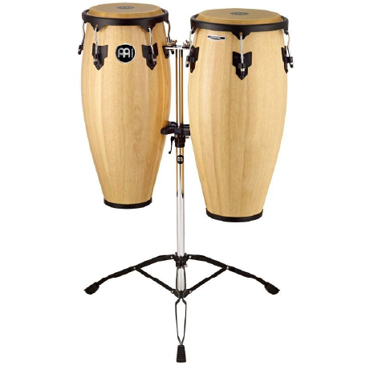

CONGAS
El tambor de conga es un tambor alto, estrecho y de una sola cabeza de Cuba. Las congas son dentadas como barriles. Las congas se utilizan tradicionalmente en los géneros afrocubanos como la conga y la rumba, aunque ahora son muy comunes en otras formas de música latina.
su forma abarrilada provino de los barriles que llegaron en los mismos barcos que llevaron los esclavos africanos al Caribe. Las primeras congas se hacían con base de madera y un parche tensado de cuero de chivo.
